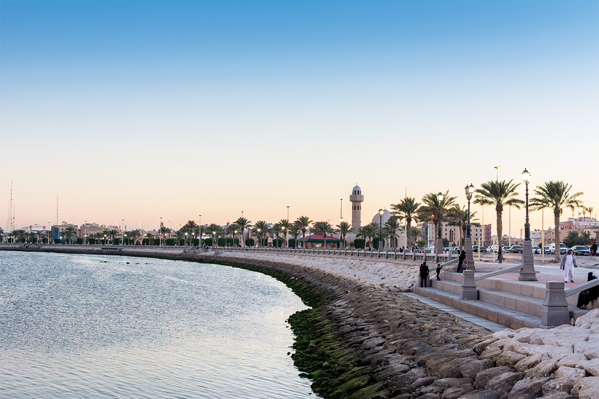

Eastern Province
More than a third of the population is concentrated in the Dammam metropolitan area. With an estimated population of 1.25 million as of 2019, Dammam, the capital of the province, is the sixth most populous city in the kingdom. The incumbent governor of the province is Prince Saud bin Nayef Al Saud. Other populous cities in the province include Hofuf, Mubarraz, Hafr al-Batin, Jubail and Khobar. The region is extremely popular among tourists for its beaches on the Persian Gulf and proximity to the other countries of the eastern Arab world, such as the United Arab Emirates and Bahrain, with the latter being linked to the province via the 25 km (15 mi) long King Fahd Causeway. The region also shares a border with Oman. The province is bordered to the west, from north to south, by the provinces of the Northern Borders, Ha'il, Qassim, Riyadh and Najran.